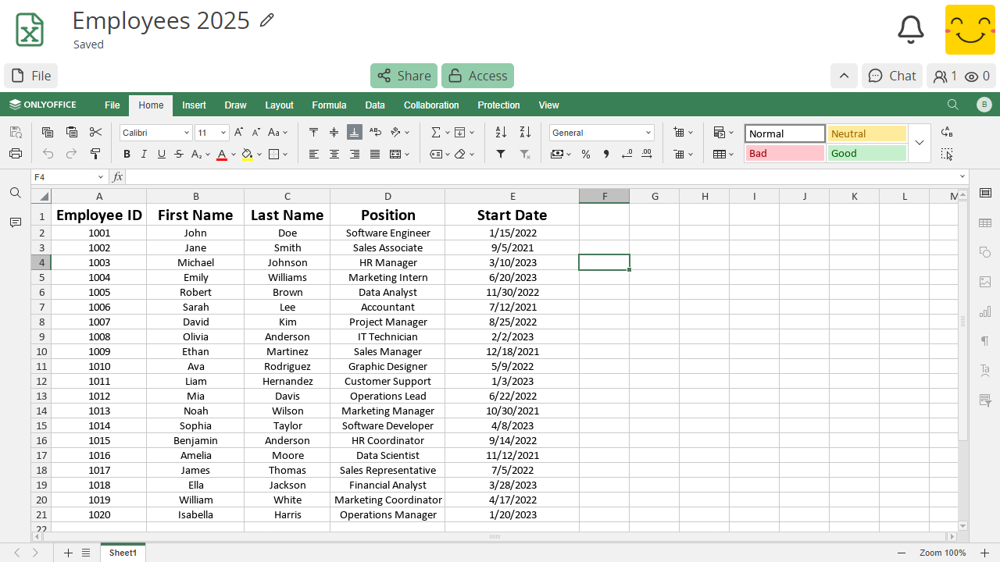

試算表#
CryptPad 的試算表應用程式整合了 OnlyOffice。欲進一步了解此整合的細節，請參閱 CryptPad 與 OnlyOffice 的關係為何？

說明文件#
試算表使用說明請參閱 OnlyOffice 說明文件。
备注
基於各項安全考量，OnlyOffice 外掛 以及 巨集 在 CryptPad 上無法使用。
工具列#
CryptPad 將 OnlyOffice 試算表整合至與其他應用程式相同的加密協作系統中。此外 OnlyOffice 在分頁式工具列中提供多種功能，因此會出現雙層工具列，可能造成混淆：
最上方的 CryptPad 工具列 用於 檔案 操作（含匯入/匯出、歷程、屬性等），以及 分享 與 存取。
OnlyOffice 工具列 用於試算表文件本身的所有功能，以及下一節說明的協作模式。
復原與協作模式#

OnlyOffice 在試算表中提供兩種協同編輯模式，會影響變更在使用者間的同步方式，以及 復原 功能是否可用。
快速模式 預設為開啟。所有使用者的新編輯會在輸入時自動與他人同步。在此模式下無法使用復原功能。
嚴格模式 讓每位使用者可獨立修改。被修改的儲存格在作者手動儲存變更前會對他人「鎖定」。新編輯只有在儲存後才會與其他使用者同步。在此模式下可以復原尚未儲存的變更。當某位使用者儲存變更時，其他人會收到儲存提示以取得最新編輯內容。
當按下 Ctrl + Z 進行復原時，應用程式會自動建議切換至 嚴格模式 以啟用復原功能。
若要切回 快速模式，請在 OnlyOffice 工具列點選 協作 分頁，並選擇 共同編輯模式 > 快速。
备注
CryptPad 會在各裝置上記住您對所有文件所選擇的編輯模式。
歷程#
若要查看試算表歷程，請在 CryptPad 工具列使用 檔案 > 歷程。
由於 OnlyOffice 與 CryptPad 加密即時協作的整合方式，試算表的歷程運作方式與 其他應用程式 不同。

試算表歷程工具列#
試算表的歷程僅能跳回上一版本，再依單次編輯逐步往前瀏覽。
上一版本
向前一步編輯
下一版本
列印#
若要列印試算表，建議先以下列其中一種格式匯出，再使用 LibreOffice Calc 等桌面應用程式處理版面配置。
或者可使用 .pdf 匯出產生列印用檔案，實際效果會依文件版面而異。
匯入/匯出#
.bin 檔、Excel .xlsx、.ods。.bin、Excel .xlsx、.ods、.pdf。